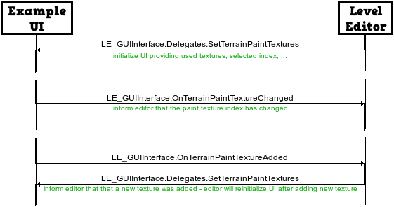

Summary
LE_GUIInterface
With the 'LE_GUIInterface' it is possible to use any UI framework such as uGUI (new Unity 4.6 GUI), NGUI (a very popular UI framework from Unity Asset Store) or even the old OnGUI (like used by the level editor before v1.20). This interface stands between the level editor logic and the implementing UI. The level editor does not reference any UI components, which allows to use any UI implementation. Take a look at the 'LE_GUIInterface_uGUIimpl...' classes. These example classes implement the UI for different scenarios. The 'LE_GUIInterface' is structured in three sections:Example UI Implementation And Structure
To give you a better understanding of the GUI interface the structure of the example UI implementation is explained now. There are three example scenes and three example scripts provided in the Unity Asset Store package. Each example script works only in the corresponding example scene. The main scene 'LE_ExampleEditor' uses the 'LE_GUIInterface_uGUIimpl' script. This script assigns and implements all available delegates defined in 'LE_GUIInterface.Delegates'. This script keeps track of all UI elements in the scene which can be changed through delegate calls.
LE_GUIInterface Reference
LE_GUIInterface.Delegates.IsCursorOverUI
Return 'true' if the cursor is currently over the UI and 'false' otherwise. If the cursor is over the UI, then the level editor will not allow to edit the terrain or place an object on the current cursor position. You need to implement this function to prevent the editor from editing the terrain while the user is interacting with the UI. This delegate is called every frame.LE_GUIInterface.Delegates.GetCameraPerspectiveGizmoRightPixelOffset
Return a float pixel offset that will be applied to the camera perspective gizmo. The gizmo will be moved by the given offset in the left direction. This way you can place the gizmo in the right top corner or before the UI on the right side or you can place it in the left top corner. The Camera Perspective Gizmo is a standalone Unity tool available in the Unity Asset Store. You can find more information about the Camera Perspective Gizmo on its homepage. This delegate is called in the first update loop. This delegate is not called if 'LE_LevelEditorMain.IS_WITH_CAMERA_PERSPECTIVE_GIZMO' is set to 'false'.LE_GUIInterface.Delegates.GetObliqueCameraPerspectiveRightPixelOffset
To keep a focused object in the center of the visible screen, the level editor allows to use an oblique camera projection. For example, without the oblique projection an object will be in the middle of the screen after focusing on it (e.g. F-key). However, especially on low resolution devices the right menu could use almost half of the screen. In this case the center of the screen is very close to the right menu. In the worst case only the left half of a big object will be visible. Return a float pixel offset that defines the width of the right menu. With the oblique projection the camera will render as if its view rect had an offset to the right. However, also the screen behind the right menu will be rendered. This delegate will be called in the first update loop and after every camera perspective switch (perspective or orthographic). This delegate will be called only if 'LE_LevelEditorMain.IS_OBLIQUE_FOCUS_CENTERING' is set to 'true'.LE_GUIInterface.Delegates.SetLevelIcon
This delegate has a 'Texture2D' parameter representing the level icon that you might want to visualize. This delegate will be called if a level with an icon in the metadata is loaded or the 'LE_GUIInterface.OnLevelRenderIconBtn' callback is executed by your UI. The passed parameter is null if a level without an icon is loaded.LE_GUIInterface.Delegates.SetTerrainWidth
This delegate passes the terrain width as an int parameter. You might want to visualize it if you have a terrain creation or size editing UI. This delegate will be called in the first update loop and every time a level is loaded or a terrain is created/modified. This delegate will be called only if 'LE_LevelEditorMain.IS_TERRAIN_EDITOR' is set to 'true'.LE_GUIInterface.Delegates.SetTerrainLength
This delegate passes the terrain length as an int parameter. You might want to visualize it if you have a terrain creation or size editing UI. This delegate will be called in the first update loop and every time a level is loaded or a terrain is created/modified. This delegate will be called only if 'LE_LevelEditorMain.IS_TERRAIN_EDITOR' is set to 'true'.LE_GUIInterface.Delegates.SetTerrainHeight
This delegate passes the terrain height as an int parameter. You might want to visualize it if you have a terrain creation or size editing UI. This delegate will be called in the first update loop and every time a level is loaded or a terrain is created/modified. This delegate will be called only if 'LE_LevelEditorMain.IS_TERRAIN_EDITOR' is set to 'true'.LE_GUIInterface.Delegates.SetTerrainBaseTextures
This delegate will be used to set up the terrain base texture selection UI. It has a texture array parameter, which is always set to match the textures from the terrain texture config asset assigned to 'LE_ConfigTerrain.TerrainTextureConfig'. Additionally, it also has an int parameter, which identifies the initially selected texture index. This delegate will be called in the first update loop and every time a level is loaded or a terrain is created/modified. This delegate will be called only if 'LE_LevelEditorMain.IS_TERRAIN_EDITOR' and 'LE_ConfigTerrain.IsBaseTextureSelection' are set to 'true'.LE_GUIInterface.Delegates.SetTerrainBrushes
This delegate will be used to set up the terrain brush selection UI. It has a texture array parameter, which is always set to match the textures from the brush array assigned to 'LE_ConfigTerrain.Brushes'. Additionally, it also has an int parameter, which identifies the currently selected brush index. This delegate will be called in the first update loop and every time a level is loaded or a terrain is created/modified. This delegate will be called only if 'LE_LevelEditorMain.IS_TERRAIN_EDITOR' is set to 'true'.LE_GUIInterface.Delegates.SetTerrainPaintTextures
This delegate will be used to set up the terrain paint texture selection UI. It has four parameters: the used texture array (textures on the terrain), the unused texture array (textures that can be added to terrain), the selected paint texture index and a bool indicating if more textures can be added. If further texture can be added, then you need to display an add button. If the add button is clicked, then the unused textures must be presented to the player, so that he can choose among them. This delegate will be called in the first update loop and every time a level is loaded or a terrain is created/modified. This delegate will be called only if 'LE_LevelEditorMain.IS_TERRAIN_EDITOR' is set to 'true'.LE_GUIInterface.Delegates.SetTerrainEditBrushSize
This delegate will pass the currently used terrain brush size as a float value in range [0,1]. This delegate will be called in the first update loop and every time a level is loaded or a terrain is created/modified. This delegate will be called only if 'LE_LevelEditorMain.IS_TERRAIN_EDITOR' is set to 'true'.LE_GUIInterface.Delegates.SetTerrainEditBrushAmount
This delegate will pass the currently used terrain brush amount as a float value in range [0,1]. This delegate will be called in the first update loop and every time a level is loaded or a terrain is created/modified. This delegate will be called only if 'LE_LevelEditorMain.IS_TERRAIN_EDITOR' is set to 'true'.LE_GUIInterface.Delegates.SetTerrainEditBrushTargetValue
This delegate will pass the currently used terrain brush target value as a float in range [0,1]. This delegate will be called in the first update loop and every time a level is loaded or a terrain is created/modified. Additionally, this delegate will be called multiple times after your UI has executed the 'LE_GUIInterface.OnTerrainReadPaintHeightBtn' callback. This delegate will be called only if 'LE_LevelEditorMain.IS_TERRAIN_EDITOR' is set to 'true'.LE_GUIInterface.Delegates.SetTerrainIsReadingPaintHeight
This delegate has a bool parameter that indicates if the level editor is currently reading the terrain paint height. Use it to visualize to the user that the height is read. This delegate will be called immediately after a 'LE_GUIInterface.OnTerrainReadPaintHeightBtn' callback call (with 'true' as parameter). It will be called again once the terrain height reading stops (with 'false' as parameter). This delegate will be called only if 'LE_LevelEditorMain.IS_TERRAIN_EDITOR' is set to 'true'.LE_GUIInterface.Delegates.SetTerrainUIMode
This delegate has an enum parameter which can have one of two values: 'ETerrainUIMode.CREATE' or 'ETerrainUIMode.EDIT'. In the create mode the level has no terrain and the player should be able to select the terrain properties such as size and base texture. In the edit mode the level has already a terrain that can be edited, but no more terrains should be created. This delegate will be called in the first update loop and every time a level is loaded or a terrain is created/modified. This delegate will be called only if 'LE_LevelEditorMain.IS_TERRAIN_EDITOR' is set to 'true'.LE_GUIInterface.Delegates.SetObjects
This delegate will be used to set up the object selection UI. It has a 'LE_ObjectMap' parameter, which is always set to match the assigned 'LE_LevelEditorMain.ROOT_OBJECT_MAP'. This delegate will be called in the first update loop. This delegate will be called only if 'LE_LevelEditorMain.IS_OBJECT_EDITOR' is set to 'true'.LE_GUIInterface.Delegates.IsObjectDragged
The UI has to handle 2D object drag & drop mechanics (image only, 3D UI will be handled by the level editor), because the level editor does not know which UI is used and therefore cannot implement it. This delegate must return 'true' if an object is currently dragged and 'false' otherwise. This delegate will be called multiple times per frame. This delegate will be called only if 'LE_LevelEditorMain.IS_OBJECT_EDITOR' is set to 'true'.LE_GUIInterface.Delegates.SetDraggableObjectMessage
The UI has to handle 2D object drag & drop mechanics (image only, 3D UI will be handled by the level editor), because the level editor does not know which UI is used and therefore cannot implement it. This delegate has a string parameter, which contains a message explaining why the selected object cannot be placed in the level. For example, an object cannot be placed if the maximal count is reached. This delegate will be called multiple times per frame. This delegate will be called only if 'LE_LevelEditorMain.IS_OBJECT_EDITOR' is set to 'true'.LE_GUIInterface.Delegates.SetDraggableObjectState
The UI has to handle 2D object drag & drop mechanics (image only, 3D UI will be handled by the level editor), because the level editor does not know which UI is used and therefore cannot implement it. This delegate has an enum parameter that can have one of three values: 'EDraggedObjectState.NONE', 'EDraggedObjectState.IN_3D_PREVIEW' or 'EDraggedObjectState.NOT_PLACEABLE'. In the none state nothing needs to be done. In the in 3D preview state the sprite or any preview texture should be hidden, because the level editor already renders a 3D preview of the drag&dropped object. In the not placeable state the UI should make clear that the object cannot be placed, for example by tinting its texture red. This delegate will be called every frame. This delegate will be called only if 'LE_LevelEditorMain.IS_OBJECT_EDITOR' is set to 'true'.LE_GUIInterface.Delegates.SetIsSelectedObjectFocusBtnInteractable
This delegate has a bool parameter which indicates if the focus button is interactable. For example, if no object is selected, then the focus button should be greyed out to prevent user irritation. This delegate will be called every frame. This delegate will be called only if 'LE_LevelEditorMain.IS_OBJECT_EDITOR' is set to 'true'.LE_GUIInterface.Delegates.SetIsSelectedObjectDuplicateBtnInteractable
This delegate has a bool parameter which indicates if the clone/duplicate button is interactable. For example, if no object is selected, then the duplicate button should be greyed out to prevent user irritation. This delegate will be called every frame. This delegate will be called only if 'LE_LevelEditorMain.IS_OBJECT_EDITOR' is set to 'true'.LE_GUIInterface.Delegates.SetIsSelectedObjectDeleteBtnInteractable
This delegate has a bool parameter which indicates if the delete button is interactable. For example, if no object is selected, then the delete button should be greyed out to prevent user irritation. This delegate will be called every frame. This delegate will be called only if 'LE_LevelEditorMain.IS_OBJECT_EDITOR' is set to 'true'.LE_GUIInterface.Delegates.SetIsSelectedPrefabFindBtnInteractable
This delegate has a bool parameter which indicates if the find button is interactable. For example, if no prefab is selected, then the find button should be greyed out to prevent user irritation. This delegate will be called every frame. This delegate will be called only if 'LE_LevelEditorMain.IS_OBJECT_EDITOR' is set to 'true'.LE_GUIInterface.Delegates.SetIsSelectedObjectSleepPropertyInteractable
This delegate has a bool parameter which indicates if the 'Rigidbody' sleep property menu is interactable. For example, if no object is selected or the selected object has no rigidbody, then the sleep property menu should be hidden. This delegate will be called every frame. This delegate will be called only if 'LE_LevelEditorMain.IS_OBJECT_EDITOR' is set to 'true'.LE_GUIInterface.Delegates.SetSelectedObjectIsSleepOnStartPropertyValue
This delegate passes the current value of the 'IsSleepOnStartProperty' of the selected object. This delegate will be called in every frame with a selected object having an editable 'IsSleepOnStartProperty'. This delegate will be called only if 'LE_LevelEditorMain.IS_OBJECT_EDITOR' is set to 'true'.LE_GUIInterface.Delegates.SetIsSelectedObjectColorPropertyInteractable
This delegate has a bool parameter which indicates if the 'Material' color property menu is interactable. For example, if no object is selected or the selected object does not support coloring, then the color property menu should be hidden. This delegate will be called every frame. This delegate will be called only if 'LE_LevelEditorMain.IS_OBJECT_EDITOR' is set to 'true'.LE_GUIInterface.Delegates.SetSelectedObjectColorPropertyValue
This delegate passes the current value of the 'ObjectColorProperty' of the selected object. This delegate will be called in every frame with a selected object having an editable 'ObjectColorProperty'. This delegate will be called only if 'LE_LevelEditorMain.IS_OBJECT_EDITOR' is set to 'true'.LE_GUIInterface.Delegates.SetSelectedObjectVariationPropertyValue
This delegate passes the index of the used variation and the names of all available variations. If nothing is selected, then null is passed instead of the variations array. This delegate will be called in every frame with a selected object having multiple variations. This delegate will be called only if 'LE_LevelEditorMain.IS_OBJECT_EDITOR' is set to 'true'.LE_GUIInterface.Delegates.ShowPopupConfirmDeleteObject
Show a popup which asks the player to confirm that he wants to delete the selected object. Invoke the passed callback with 'true' if the users answer is 'yes - delete object' and pass 'false' if the answer is 'no - do nothing'. This delegate is called immediately after your UI calls LE_GUIInterface.OnSelectedObjectDeleteBtn'.LE_GUIInterface.Delegates.ShowWP8RenderLevelIconBugDialog
If for some reason you cannot use the latest Unity version and you have to run Unity 4.6.0 you will encounter a bug with level icon rendering. For more information search "This is another bug with Unity for Windows Phone 8" in the LE_LogicLevel.cs file. An example text that you might want to show: "A bug might have occurred! If the rendered level icon looks buggy, please bring your device in landscape left orientation (turn it around for 180 degrees, while still facing the screen) and render level icon again."LE_GUIInterface(.EventHandlers).OnEditModeBtn
The wrapper of this event takes an int parameter, which is converted to the 'LE_EEditMode (TERRAIN, OBJECT, NONE)' enum. This event changes the edit mode of the level editor. You should not call this wrapper with the edit mode 0 ('TERRAIN') if you have set the 'LE_LevelEditorMain.IS_TERRAIN_EDITOR' to 'false'. The same applies to the ('OBJECT') mode. In the example scene this wrapper is assigned to the tab buttons at top right.LE_GUIInterface(.EventHandlers).OnUndoBtn
This parameterless event wrapper will undo the last action, if there are actions that can be undone. In the example scene this wrapper is assigned to the 'LeftNav_UndoBtn' button.LE_GUIInterface(.EventHandlers).OnRedoBtn
This parameterless event wrapper will redo the last action, if there are actions that were undone. In the example scene this wrapper is assigned to the 'LeftNav_RedoBtn' button.LE_GUIInterface(.EventHandlers).OnTerrainWidthChanged
The wrapper of this event takes a string parameter, which is later converted to an int. If there was no terrain created/loaded, then the width of the terrain that will be created later by the level editor is changed. If there is an editable terrain created, then its width will change on the fly (this behaviour is not shown in the example, but you can see it by enabling the create terrain UI with an existing terrain). This event is available only if 'LE_LevelEditorMain.IS_TERRAIN_EDITOR' is set to 'true'. In the example scene this wrapper is assigned to the width input text field of the create terrain menu.LE_GUIInterface(.EventHandlers).OnTerrainLengthChanged
The wrapper of this event takes a string parameter, which is later converted to an int. If there was no terrain created/loaded, then the length of the terrain that will be created later by the level editor is changed. If there is an editable terrain created, then its length will change on the fly (this behaviour is not shown in the example, but you can see it by enabling the create terrain UI with an existing terrain). This event is available only if 'LE_LevelEditorMain.IS_TERRAIN_EDITOR' is set to 'true'. In the example scene this wrapper is assigned to the length input text field of the create terrain menu.LE_GUIInterface(.EventHandlers).OnTerrainHeightChanged
The wrapper of this event takes a string parameter, which is later converted to an int. If there was no terrain created/loaded, then the height of the terrain that will be created later by the level editor is changed. If there is an editable terrain created, then its height will change on the fly (this behaviour is not shown in the example, but you can see it by enabling the create terrain UI with an existing terrain). This event is available only if 'LE_LevelEditorMain.IS_TERRAIN_EDITOR' is set to 'true'. In the example scene this wrapper is assigned to the height input text field of the create terrain menu.LE_GUIInterface(.EventHandlers).OnTerrainBaseTextureChanged
The wrapper of this event takes an int parameter. The passed parameter is used as a texture index in the texture array from the terrain texture config assigned to 'LE_ConfigTerrain.TerrainTextureConfig'. This index stands for the first (base) texture of the later created terrain. Call this wrapper only if there was no terrain created or loaded. This event is available only if 'LE_LevelEditorMain.IS_TERRAIN_EDITOR' is set to 'true'. In the example scene the 'LE_GUIInterface_uGUIimpl' script assigns this wrapper to the texture picker in the create terrain menu.LE_GUIInterface(.EventHandlers).OnTerrainBrushChanged
The wrapper of this event takes an int parameter. The passed parameter is used as a texture index in the brush texture array assigned to 'LE_ConfigTerrain.Brushes'. The used brush will be changed in the terrain editor logic. Also, the brush projector texture will be changed. This event is available only if 'LE_LevelEditorMain.IS_TERRAIN_EDITOR' is set to 'true'. In the example scene the 'LE_GUIInterface_uGUIimpl' script assigns this wrapper to the brush texture picker in the terrain edit menu.LE_GUIInterface(.EventHandlers).OnTerrainPaintTextureChanged
The wrapper of this event takes an int parameter. The passed parameter is used as a texture index in the texture array of the edited terrain. The selected texture (splat prototype) will be applied to the terrain editor logic. This event is available only if 'LE_LevelEditorMain.IS_TERRAIN_EDITOR' is set to 'true'. In the example scene the 'LE_GUIInterface_uGUIimpl' script assigns this wrapper to the paint texture picker in the terrain edit menu.LE_GUIInterface(.EventHandlers).OnTerrainPaintTextureAdded
The wrapper of this event takes a 'Texture2D' parameter. The passed texture must be contained in the terrain texture config assigned to 'LE_ConfigTerrain.TerrainTextureConfig'. The given texture will be added to the used terrain textures. This texture will also be selected for painting. This event is available only if 'LE_LevelEditorMain.IS_TERRAIN_EDITOR' is set to 'true'. In the example scene the 'LE_GUIInterface_uGUIimpl' script calls this wrapper when the 'add new' button in the paint texture picker in the terrain edit menu is clicked.LE_GUIInterface(.EventHandlers).OnTerrainEditBrushSizeChanged
The wrapper of this event takes a float parameter, which must be in range [0,1]. The brush size is calculated from the passed value like this: 'max(0.002, value²)'. The brush has the size of the terrain if the size value is 1. This event is available only if 'LE_LevelEditorMain.IS_TERRAIN_EDITOR' is set to 'true'. In the example scene this wrapper is assigned to the 'Size' slider of the terrain edit menu.LE_GUIInterface(.EventHandlers).OnTerrainEditBrushAmountChanged
The wrapper of this event takes a float parameter, which must be in range [0,1]. The amount is calculated from the passed value like this: 'max(0.002, value)'. If you need to set a negative amount, for example to lower the terrain combine this event with 'OnTerrainChangeHeightModeChanged'. This event is available only if 'LE_LevelEditorMain.IS_TERRAIN_EDITOR' is set to 'true'. In the example scene this wrapper is assigned to the 'Amount' slider of the terrain edit menu.LE_GUIInterface(.EventHandlers).OnTerrainEditBrushTargetValueChanged
The wrapper of this event takes a float parameter, which must be in range [0,1]. The target value is set in the terrain editor logic. A value of 0 means that the terrain will be lowered to the bottom. A value of 0.5 will raise the terrain to the half of the terrain's height and a value of one will raise the terrain to the maximal height. This event is available only if 'LE_LevelEditorMain.IS_TERRAIN_EDITOR' is set to 'true'. In the example scene this wrapper is assigned to the 'Target Value' slider of the terrain edit menu.LE_GUIInterface(.EventHandlers).OnTerrainEditDirectionChanged
The wrapper of this event takes a float parameter, which must be in range [0,1]. The smooth direction angle is calculated like this: 'round(value*16)*22.5'. This way only 16 directions are available. This is required due to the smoothing function implementation. This event is available only if 'LE_LevelEditorMain.IS_TERRAIN_EDITOR' is set to 'true'. In the example scene this wrapper is assigned to the 'Is Directed' toggle of the terrain smooth menu.LE_GUIInterface(.EventHandlers).OnTerrainChangeHeightModeChanged
The wrapper of this event takes a bool parameter, which indicates if the terrain is raised ('true') or lowered ('false'). This event is available only if 'LE_LevelEditorMain.IS_TERRAIN_EDITOR' is set to 'true'. In the example scene this wrapper is assigned to the 'Raise' and 'Lower' toggle buttons of the raise/lower height terrain edit menu.LE_GUIInterface(.EventHandlers).OnTerrainIsDirectedSmoothChanged
The wrapper of this event takes a bool parameter, which indicates if the terrain smoothing is directed. Use in combination with 'OnTerrainEditDirectionChanged' to set the smooth direction. If the smooth function is directed, then only the neightbours in the smooth direction are used to calculate the smoothed height for a certain point. This allows to smooth a mountain crest without lowering it or to smooth a riverbed without raising it. This event is available only if 'LE_LevelEditorMain.IS_TERRAIN_EDITOR' is set to 'true'. In the example scene this wrapper is assigned to the 'Is Directed' toggle of the smooth terrain edit mode menu.LE_GUIInterface(.EventHandlers).OnTerrainCreateBtn
This parameterless event wrapper will create a terrain if no terrain was created or loaded. Use in combination with 'OnTerrainWidthChanged, OnTerrainLengthChanged, OnTerrainHeightChanged, OnTerrainBaseTextureChanged' to setup the terrain values. This event is available only if 'LE_LevelEditorMain.IS_TERRAIN_EDITOR' is set to 'true'. In the example scene this wrapper is assigned to the 'Create Terrain' button.LE_GUIInterface(.EventHandlers).OnTerrainEditModeBtn
The wrapper of this event takes an int parameter, which is converted to the 'LE_ETerrainEditMode (CHANGE_HEIGHT, CHANGE_HEIGHT_TO_TARGET_VALUE, SMOOTH_HEIGHT, DRAW_TEXTURE)' enum. This event changes the terrain edit mode of the terrain editor. This event is available only if 'LE_LevelEditorMain.IS_TERRAIN_EDITOR' is set to 'true'. In the example scene this wrapper is assigned to the terrain edit mode buttons below the tab buttons at top right.LE_GUIInterface(.EventHandlers).OnTerrainReadPaintHeightBtn
This parameterless event wrapper will bring the terrain editor in the read terrain paint height mode. The editor will read the terrain height at the point where the next mouse click/touch will be. Use in combination with 'SetTerrainIsReadingPaintHeight' delegate to visualize the reading process. Use in combination with 'SetTerrainEditBrushTargetValue' delegate to visualize the new read height. This event is available only if 'LE_LevelEditorMain.IS_TERRAIN_EDITOR' is set to 'true'. In the example scene this wrapper is assigned to the 'Read Terrain Paint Height' button.LE_GUIInterface(.EventHandlers).OnObjectEditModeBtn
The wrapper of this event takes an int parameter, which is converted to the 'LE_EObjectEditMode (NO_EDIT, MOVE, ROTATE, SCALE)' enum. This event changes the object edit mode of the object editor. This event is available only if 'LE_LevelEditorMain.IS_OBJECT_EDITOR' is set to 'true'. In the example scene this wrapper is assigned to the object edit mode buttons below the tab buttons at top right.LE_GUIInterface(.EventHandlers).OnObjectSelectDraggable
The wrapper of this event takes two parameters: a 'LE_Object' and a string. The passed 'LE_Object' is the resource reference to the object prefab and the string parameter is the resource path to the prefab. The draggable object will be set in the object editor. Use in combination with 'IsObjectDragged, SetDraggableObjectMessage, SetDraggableObjectState' delegates to implement drag&drop. This event is available only if 'LE_LevelEditorMain.IS_OBJECT_EDITOR' is set to 'true'. In the example scene this wrapper is assigned to the leaf nodes of the object tree browser.LE_GUIInterface(.EventHandlers).OnSelectedObjectFocusBtn
This parameterless event wrapper will focus the camera on the selected object. Call this wrapper only if an object is selected. Use in combination with 'SetIsSelectedObjectFocusBtnInteractable' to disable UI if no object is selected. This event is available only if 'LE_LevelEditorMain.IS_OBJECT_EDITOR' is set to 'true'. In the example scene this wrapper is assigned to the 'Focus' button in the objects menu.LE_GUIInterface(.EventHandlers).OnSelectedObjectDuplicateBtn
This parameterless event wrapper will duplicate/clone the selected object. Call this wrapper only if an object is selected and can be duplicated. Use in combination with 'SetIsSelectedObjectDuplicateBtnInteractable' to disable UI if no object is selected or it cannot be duplicated. This event is available only if 'LE_LevelEditorMain.IS_OBJECT_EDITOR' is set to 'true'. In the example scene this wrapper is assigned to the 'Duplicate' button in the objects menu.LE_GUIInterface(.EventHandlers).OnSelectedObjectDeleteBtn
This parameterless event wrapper will delete the selected object. Call this wrapper only if an object is selected. Use in combination with 'SetIsSelectedObjectDeleteBtnInteractable' to disable UI if no object is selected. This event is available only if 'LE_LevelEditorMain.IS_OBJECT_EDITOR' is set to 'true'. In the example scene this wrapper is assigned to the 'Delete' button in the objects menu.LE_GUIInterface(.EventHandlers).OnSelectedObjectIsSleepOnStartChanged
The wrapper of this event takes a bool parameter, which indicates if the rigidbody should be sent to sleep on level load. Call this wrapper only if an object with a rigidbody is selected and the sleep setting for this object can be changed. Use in combination with 'SetIsSelectedObjectSleepPropertyInteractable' delegate to disable UI if no object is selected or its sleep setting is not available. Use in combination with 'SetSelectedObjectIsSleepOnStartPropertyValue' delegate to keep your UI updated. This event is available only if 'LE_LevelEditorMain.IS_OBJECT_EDITOR' is set to 'true'. In the example scene this wrapper is assigned to the 'Sleep On Start' toggle in the object property menu.LE_GUIInterface(.EventHandlers).OnSelectedObjectColorChanged
The wrapper of this event takes a 'Color' parameter, which is applied to the materials of the level object. Call this wrapper only if an object is selected and the color setting for this object can be changed. Use in combination with 'SetIsSelectedObjectColorPropertyInteractable' delegate to disable UI if no object is selected or its color setting is not available. Use in combination with 'SetSelectedObjectColorPropertyValue' delegate to keep your UI updated. This event is available only if 'LE_LevelEditorMain.IS_OBJECT_EDITOR' is set to 'true'. In the example scene the 'LE_GUIInterface_uGUIimpl' script assigns this wrapper to the color picker in the object property menu.LE_GUIInterface(.EventHandlers).OnSelectedObjectVariationIndexChanged
The wrapper of this event takes an int parameter as index for the variation, which is applied to the object. Call this wrapper only if an object is selected and there are multiple variations available. Use in combination with 'SetIsSelectedObjectColorPropertyInteractable' delegate to disable UI if no object is selected or its color setting is not available. Use in combination with 'SetSelectedObjectVariationPropertyValue' delegate to keep your UI updated. This event is available only if 'LE_LevelEditorMain.IS_OBJECT_EDITOR' is set to 'true'. In the example scene the 'LE_GUIInterface_uGUIimpl' script assigns this wrapper to the variation browser in the object property menu.LE_GUIInterface(.EventHandlers).OnSelectedPrefabFindBtn
This parameterless event wrapper will search the selected prefab in the scene. If an object instance of this prefab is found, then the editor will select this instance and focus on it. If there are multiple instances of this object and one istance is already selected, then the editor will focus on the next instance. Call this wrapper only if a prefab is selected. Use in combination with 'SetIsSelectedPrefabFindBtnInteractable' to disable UI if no prefab is selected. This event is available only if 'LE_LevelEditorMain.IS_OBJECT_EDITOR' is set to 'true'. In the example scene this wrapper is assigned to the 'Find' button in the objects menu.LE_GUIInterface(.EventHandlers).OnLevelSaveBtn
This parameterless event wrapper will save the level. Use in combination with 'LE_EventInterface.OnSave' to get the serialized level data. In the example scene this wrapper is assigned to the 'Save' button.LE_GUIInterface(.EventHandlers).OnLevelLoadBtn
This parameterless event wrapper will load the level. Use in combination with 'LE_EventInterface.OnLoad' to provide the serialized level data. In the example scene this wrapper is assigned to the 'Load' button.LE_GUIInterface(.EventHandlers).OnLevelRenderIconBtn
This parameterless event wrapper will render the level icon by capturing the screen. Use in combination with 'SetLevelIcon' delegate to visualize the level icon. In the example scene this wrapper is assigned to the 'Render Level Icon' button.